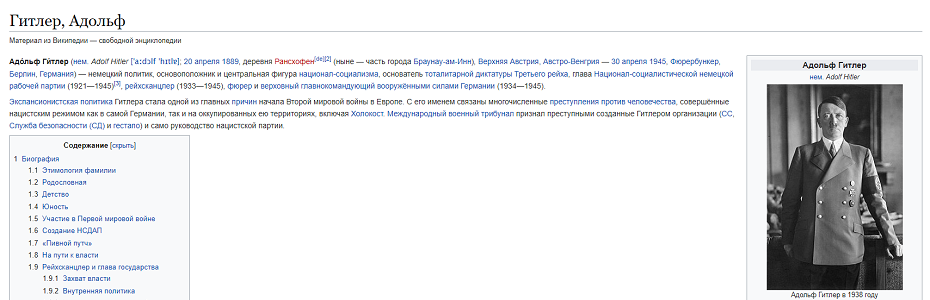

Добро пожаловать на сайт Wikipedia speedrun
Вот как это работает. Есть два вида спидрана: по времени и переходам.
1
Вы начинаете со случайной страницы
2

Используя любые ссылки в статье, окажитесь на странице Адольфа Гитлера или другой странице, выбранной вами
3

За наименьшее время
- Выбирайте ссылки в начале страницы с наиболее широкими определениями
- Старайтесь выйти на статью о Европе
- Обращайте внимание на даты
3

За наименьшее количество переходов по ссылкам
- Внимательно читайте статью и подбирайте ссылки
- Старайтесь перейти на финальную страницу напрямую и без лишних переходов
- Обращайте внимание на категории статей